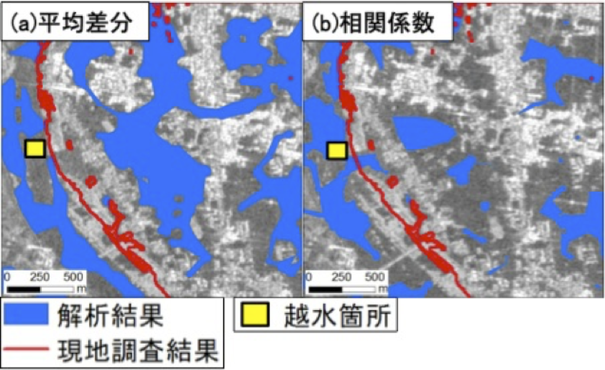

なぜリモートセンシングか？
現地へのアクセスが困難なときに被害を観測する
災害後の現地調査は、危険を伴い、時間がかかり、網羅できないことがあります。衛星データは、広い範囲を繰り返し観測し、変化を特定し、災害対応を導くための手段となります。私たちは、SAR画像や光学画像を、機械学習、GIS、物理的な被害の知見と組み合わせています。
研究の目標
災害がどこで発生し、その影響がどの程度深刻なのかについて、行動につながる情報を提供します。
01 · 地震被害
偏波SARによる建物被害把握
地震後に取得した単一の二偏波ALOS-2/PALSAR-2画像から、軽微な被害、倒壊、傾斜の建物を識別できます。2015年ネパール地震後の、被害レベルの異なる市街地に機械学習手法を適用しました。
ALOS-2/PALSAR-2建物被害機械学習

02 · 浸水域マッピング
LバンドSARによる都市浸水域の抽出
SARは、雲や夜間により光学画像が使えない場合でも、浸水域のマッピングを可能にします。2015年9月の関東・東北豪雨を事例として、市街地における浸水域を検出する手法を開発しました。
LバンドSAR浸水域マッピング変化抽出

03 · マルチハザードの統合
災害対応のための迅速な被害マッピング
SAR、光学データ、市街地情報、機械学習手法を組み合わせ、緊急対応のために倒壊建物や浸水域を検出します。優先順位付けを支援できるだけの速さで、信頼性の高い空間情報を提供することを目指しています。
SAR・光学AI迅速評価データ融合